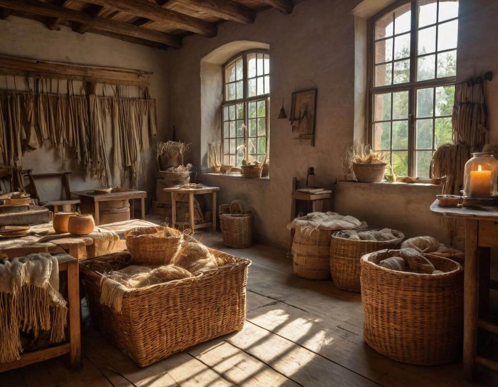
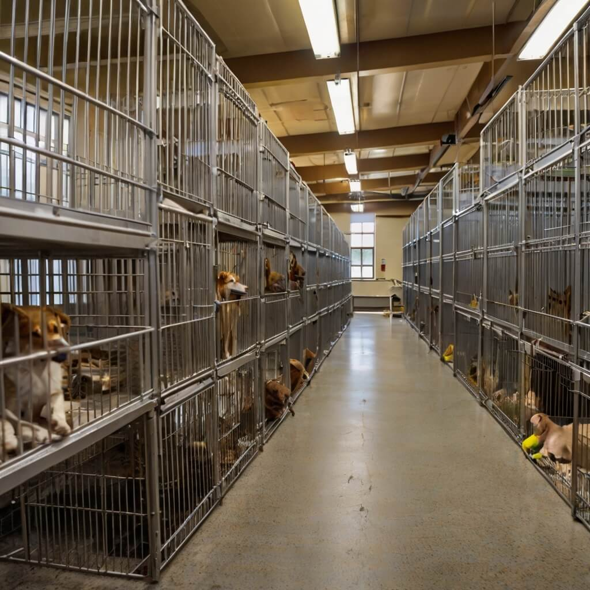
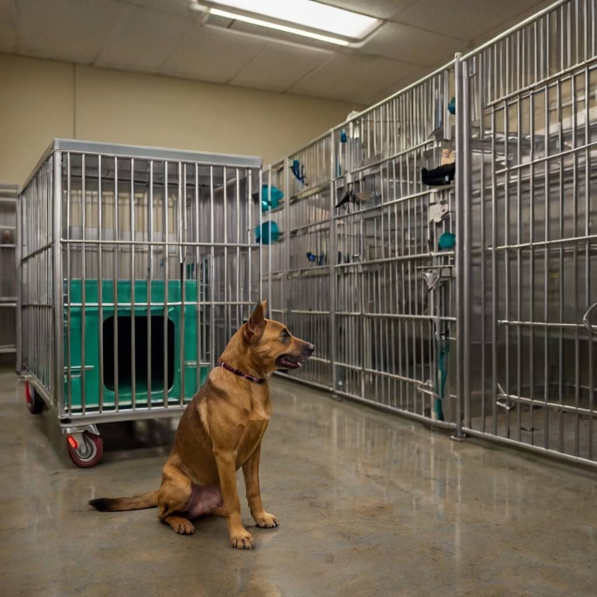

Our Roots in Rescue
Founded in 2012, WildEmbrace emerged from a simple yet powerful idea: every animal deserves a chance to be loved. What began as a small group of passionate rescuers, working tirelessly to save abandoned and injured animals, has grown into a thriving shelter that has rescued, rehabilitated, and rehomed over 5,000 lives—and counting. Our journey has been filled with challenges, triumphs, and countless heartwarming moments as we witness the incredible resilience of the animals we care for.

WildEmbrace is dedicated to rescuing and rehabilitating animals in need. With a team full of passion, we work tirelessly to give every animal a second chance at life, love, and happiness. Our mission is to provide shelter, medical care, and emotional support to abandoned, abused, and stray animals, helping them transition into safe and loving forever homes.
At WildEmbrace, we believe that every animal deserves a future filled with love. Through careful rehabilitation, socialization, and proper medical treatment, we ensure that every rescued pet gets the care they need before being placed with responsible adopters. Our shelter is more than just a temporary home—it is a place of healing, hope, and new beginnings.
Beyond adoption, there are countless ways you can help make a difference. Whether by donating food, medical supplies, or funds, every contribution plays a crucial role in the well-being of our rescues. Additionally, our dedicated volunteers provide love, companionship, and essential care, from daily walks to playtime and enrichment activities.
Education is also at the heart of our mission. We actively engage with the community, raising awareness about responsible pet ownership, the importance of spaying and neutering, and the fight against animal cruelty. Through outreach programs, school visits, and advocacy efforts, we aim to create a compassionate world where all animals are treated with kindness and respect.
Every animal deserves a chance at a better life. Whether you choose to adopt, volunteer, donate, or simply spread the word, you can be the reason an animal gets their happily ever after. Join us in making a difference—because together, we can give these animals the love and care they truly deserve.
Get Involved
Become part of our rescue family by adopting, fostering, or volunteering. Your kindness transforms lives, giving abandoned and neglected animals the care and affection they deserve. Whether it's walking dogs, helping with feeding, or providing temporary shelter through fostering, every effort brings hope to an animal in need. No matter your experience, your compassion makes a difference.
Our Approach
From medical care to emotional healing, we tailor every rescue journey to give animals the best possible future. Our team works closely with veterinarians, trainers, and behaviorists to ensure that each animal receives personalized attention. We focus on socialization, rehabilitation, and proper medical treatment, ensuring they are ready for a new, loving home. No rescue is ever left behind, and each one gets a second chance at life.
Our Vision
A world where every animal is safe, cherished, and loved. Together, we can make it happen by promoting responsible pet ownership, advocating for stronger animal protection laws, and fostering a compassionate community. We believe in a future where no pet suffers from neglect or abandonment, and every rescued animal finds a forever home filled with warmth and care. Join us in turning this vision into reality.
Milestones of Compassion at WildEmbrace
Our community of over 300 dedicated volunteers and 1,200 compassionate foster families has been the backbone of our mission, helping us save and nurture thousands of animals. Their tireless efforts provide abandoned, injured, and neglected animals with food, shelter, medical care, and the love they need to heal. From emergency rescues to daily enrichment, every act of kindness contributes to a brighter future for these animals.
Every paw we save is a step toward a world where no animal is left behind. Through adoption programs, rehabilitation efforts, and community outreach, we strive to create a future where all animals are treated with dignity and compassion. With your support, we can continue to rescue, protect, and rehome even more animals in need, ensuring they find the loving families they deserve. Together, we can make a difference—one life at a time.

Ready to Make a Difference?

Whether you adopt, volunteer, or donate, your action today can transform an animal’s life forever. Be their hero. Every small effort—whether offering a safe and loving home, dedicating your time to caring for rescued animals, or contributing to medical and shelter expenses—creates a lasting impact.
Adoption gives a homeless animal a second chance, replacing fear and uncertainty with warmth and security. Volunteering provides essential care, from feeding and grooming to rehabilitation and socialization, ensuring that each animal feels loved. Donations, whether financial or in the form of food, blankets, and medical supplies, sustain our ability to rescue and rehabilitate more animals in need.
No act of kindness is too small. Every rescued pet represents a victory against neglect and abandonment, and with your help, we can give them the future they deserve. Stand with us in making a difference—because for them, you are hope, love, and the promise of a better tomorrow.
Our Core Services
Saving Lives Daily
Our team responds to calls about abandoned or injured animals, providing immediate rescue and safety.
Healing and Recovery
From medical treatment to behavioral support, we ensure every animal is ready for their next chapter.
Finding Forever Homes
We match pets with loving families, ensuring a seamless transition and lifelong happiness.
Be Their Voice
Support WildEmbrace by volunteering, fostering, or donating. Every effort helps us rescue more animals and give them the lives they deserve. Together, we can create a world where no animal suffers, every pet has a home, and kindness leads the way.
- Volunteer your time to care for our rescues
- Foster a pet and provide temporary love
- Donate to fund medical care and supplies
- Spread the word about our mission